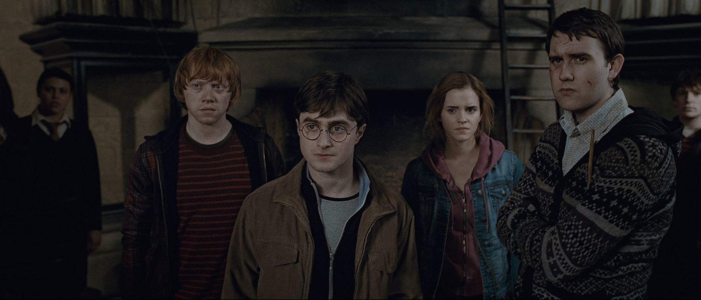

Harry Potter and the Deathly Hallows part 2
GO TO: ------ About ------ Storyline ------ Cast ------ Awards ------ Comments-----
About
Harry Potter and the Deathly Hallows part 2 is a 2011 fantasy film directed by Mike Newell and distributed by
Warner Bros. Pictures.
It is based on J. K. Rowling's 2000 novel of the same name. The film, which is the fourth instalment in
the Harry Potter film series,
was written by Steve Kloves and produced by David Heyman. The story follows Harry's fourth year at
Hogwarts as he is chosen by the Goblet of Fire
to compete in the Triwizard Tournament.
The film is the first of the series to receive a PG-13 certificate in the US, and a 12A in the UK,
and stars Daniel Radcliffe as Harry Potter
alongside Rupert Grint and Emma Watson as Harry's best friends Ron Weasley and Hermione Granger. It is
the sequel to Harry Potter and the Prisoner of Azkaban
and is followed by Harry Potter and the Order of the Phoenix.
Filming began in early 2010. The Hogwarts scenes were shot at the Leavesden Film Studios. Five days
after its release,
the film had grossed over US$102 million at the North American box office, which is the third-highest
first-weekend tally for a Harry Potter film
behind Harry Potter and the Deathly Hallows – Part 1 and Part 2. Goblet of Fire enjoyed an immensely
successful run at the box office,
earning $897 million worldwide, which made it the highest-grossing film of 2005 and the
eighth-highest-grossing film of all-time at that time
and the sixth-highest-grossing film in the Harry Potter series.
Storyline
"
The story begins fifty years before the present day, with a description of how the Riddle family was mysteriously killed at supper,
and their groundsman, Frank Bryce, was suspected of the crime, then declared innocent. Frank Bryce, now an elderly man,
wakes in the night to see a light in the window of the abandoned Riddle House. He investigates and overhears Voldemort and Wormtail plotting to kill a boy named Harry Potter.
Voldemort takes note of him and kills him on the spot. Harry Potter wakes up in the night with a throbbing pain in the scar Voldemort gave him.
He worries that Voldemort is nearby, and he writes to Sirius Black, his godfather, mentioning the pain in his scar.
The next morning Harry's Uncle Vernon receives a letter from the Weasleys asking Harry to join them at the Quidditch World Cup,
and Vernon grudgingly agrees to let Harry go. The following day, the Weasleys arrive in the Dursleys' boarded-up fireplace to pick up Harry.
The Weasley twins "accidentally" leave a trick toffee on the ground, which Dudley eats, causing his tongue to engorge itself.
The Dursleys panic and throw things at Mr. Weasley as the Weasley boys and Harry exit through the fireplace.
Harry arrives at The Burrow, the Weasley household, and there he meets for the two eldest Weasley brothers, Bill and Charlie, and there,
Mrs. Weasley berates the twins for making Weasleys' Wizard Wheezes and giving them to Dudley.
Cast
| Name | Role |
|---|---|
| Daniel Radcliffe | Harry Potter |
| Emma Watson | Hermione Granger |
| Rupert Grint | Ronald Weasley |
| Tom Felton | Draco Malfoy |
| Richard Harris | Alvo Dumbledore |
| Maggie Smith | Minerva McGonnagall |
| Robert Pattinson | Cedric Diggory |
Awards
| Award | Category | Recipient(s) and nominee(s) | Result |
|---|---|---|---|
| Academy Awards | Best Director | Nominee | |
| BAFTA Awards | Best Production Design | Stuart Craig | Won |
| Sierra Awards | Best Family Film | Won | |
| Evening Standard British Film Awards | Technical Achievement Award | John Snow | Won |
| Phoenix Film Critics Society Awards | Best Family Film | Won | |
| Grammy Awards | Best Score Soundtrack Album for a Motion Picture, Television or Other Visual Media | David Heyman | Won |
| AFI Awards | Special Award | The Harry Potter Series | Won |
| Teen Choice Awards | Movies Choice - Drama | Won | |
| Total | 7 |
| Name | Date | Title | Comment |
|---|---|---|---|
| ".$row["username"]." | ".$row["cDate"]." | ".$row["cTitle"]." | ".$row["comment"]." |